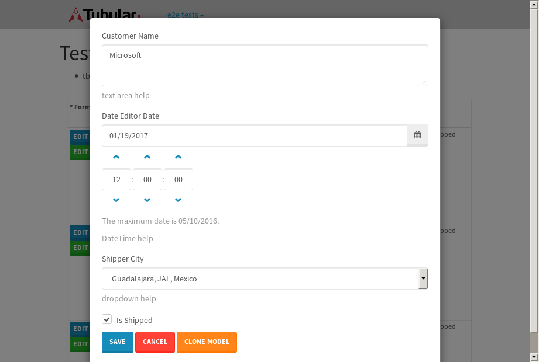
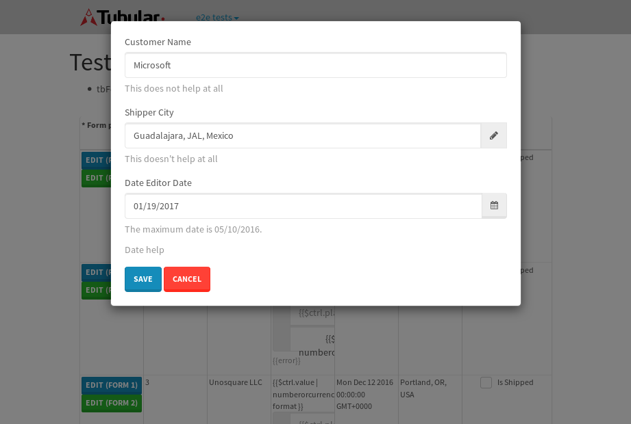
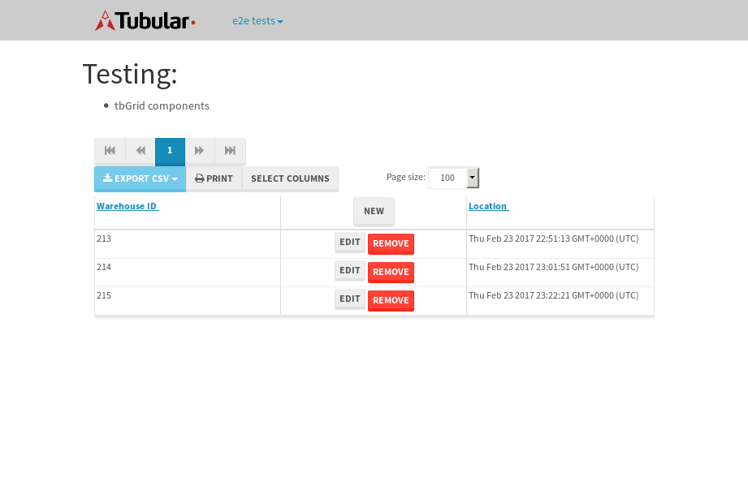

tbColumn.Grid Sorting - 27.661sTests: 5Skipped: 0Failures: 0 should sort data in ascending order then on descending order when sorting by Order Id column - 5.442sTests passed: 100.00%should order data in ascending order when click-sorting an unsorted text column - 5.08sTests passed: 100.00%should order data in descending order when click-sorting an ascending-sorted text column - 5.698sTests passed: 100.00%should order data in ascending order when click-sorting an unsorted date column - 5.51sTests passed: 100.00%should order data in descending order when click-sorting twice an unsorted date column - 5.93sTests passed: 100.00%
tbEmptyForm - 3.497sTests: 3Skipped: 0Failures: 1 should have an empty required field - 0.75sTests passed: 100.00%should not be able to click on save - 0.55sTests passed: 100.00%should load default value for numeric field - 0.478sFailed: No element found using locator: By(css selector, input[name=MinimumOrders])✗Tests passed: 0.00%
Tubular Filters.tbColumnFilter - 107.038sTests: 12Skipped: 0Failures: 0 should cancel filtering when clicking outside filter-popover - 8.634sTests passed: 100.00%should disable Value text-input for "None" filter - 6.688sTests passed: 100.00%should disable apply button for "None" filter - 7.001sTests passed: 100.00%should decorate popover button when showing data is being filtered for its column - 11.969sTests passed: 100.00%should correctly filter data for the "Equals" filtering option - 8.752sTests passed: 100.00%should correctly filter data for the "Not Equals" filtering option - 8.491sTests passed: 100.00%should correctly filter data for the "Contains" filtering option - 8.77sTests passed: 100.00%should correctly filter data for the "Not Contains" filtering option - 8.001sTests passed: 100.00%should correctly filter data for the "Starts With" filtering option - 6.757sTests passed: 100.00%should correctly filter data for the "Not Starts With" filtering option - 7.003sTests passed: 100.00%should correctly filter data for the "Ends With" filtering option - 7.017sTests passed: 100.00%should correctly filter data for the "Not Ends With" filtering option - 6.86sTests passed: 100.00%
Tubular Filters.tbColumnDateTimeFilter - 136.562sTests: 12Skipped: 0Failures: 0 should cancel filtering when clicking outside filter-popover - 6.992sTests passed: 100.00%should disable Value text-input for "None" filter - 6.779sTests passed: 100.00%should disable apply button for "None" filter - 6.99sTests passed: 100.00%should clear filtering when clicking on Clean button - 17.868sTests passed: 100.00%should decorate popover button when showing data is being filtered for its column - 12.028sTests passed: 100.00%should correctly filter data for the "Equals" filtering option - 6.768sTests passed: 100.00%should correctly filter data for the "Not Equals" filtering option - 7.156sTests passed: 100.00%should correctly filter data for the "Between" filtering option - 12.499sTests passed: 100.00%should correctly filter data for the "Greater-or-equal" filtering option - 12.45sTests passed: 100.00%should corretlly filter data for the "Greater" filtering option - 13.159sTests passed: 100.00%should correctly filter data for the "Less-or-equal" filtering option - 11.71sTests passed: 100.00%should correctly filter data for the "Less" filtering option - 11.639sTests passed: 100.00%
Tubular Filters.tbColumnOptionsFilter - 81.184sTests: 3Skipped: 0Failures: 0 should cancel filtering when clicking outside filter-popover - 9.069sTests passed: 100.00%should decorate popover button when showing data is being filtered for its column - 12.206sTests passed: 100.00%should filter column-elements in accordance to the selected filter when selecting a single option - 48.893sTests passed: 100.00%
Tubular Filters.tbTextSearch - 49.251sTests: 5Skipped: 0Failures: 0 min-chars is not set - 1.127sTests passed: 100.00%should filter data in searchable-column customer name to matching inputted text, starting from 3 characters - 7.041sTests passed: 100.00%should filter data in searchable-column shipper city to matching inputted text, starting from 3 characters - 11.988sTests passed: 100.00%should show clear button when there is inputted text only - 6.641sTests passed: 100.00%should clear filtering when clicking clear button - 16.935sTests passed: 100.00%
tbForm related components.tbCheckboxField - 7.321sTests: 2Skipped: 0Failures: 0 should save changes on "SAVE" - 3.734sTests passed: 100.00%should discard changes on "CANCEL" - 2.007sTests passed: 100.00%
tbForm related components.tbDropDownEditor - 12.385sTests: 5Skipped: 0Failures: 0 should set initial input value to the value of "value" attribute when defined - 2.121sTests passed: 100.00%should show the component name value in a label field when "showLabel" attribute is true - 2.089sTests passed: 100.00%should show a help field equal to this attribute, is present - 2.488sTests passed: 100.00%should submit modifications to item/server when clicking form "Save" - 2.909sTests passed: 100.00%should NOT submit modifications to item/server when clicking form "Cancel" - 2.19sTests passed: 100.00%
tbForm related components.tbTextArea - 17.29sTests: 7Skipped: 0Failures: 1 should set initial input value to the value of "value" attribute when defined - 2.222sTests passed: 100.00%should be invalidated when the number of chars is not in the range of "min" and "max" attributes - 2.198sExpected false to be true.✗Expected 0 to be less than 0.✗Tests passed: 33.33%should show the component name value in a label field when "showLabel" attribute is true - 1.872sTests passed: 100.00%should show a help field equal to this attribute, is present - 1.814sTests passed: 100.00%should require the field when the attribute "required" is true - 2.772sTests passed: 100.00%should submit modifications to item/server when clicking form "Save" - 3.19sTests passed: 100.00%should NOT submit modifications to item/server when clicking form "Cancel" - 2.133sTests passed: 100.00%
tbForm related components.tbDateEditor - 15.555sTests: 6Skipped: 0Failures: 0 should set initial date value to the value of "value" attribute when defined - 2.356sTests passed: 100.00%should be invalidated when the date is not in the range of "min" and "max" attributes - 3.265sTests passed: 100.00%should show the component name value in a label field when "showLabel" attribute is true - 1.642sTests passed: 100.00%should show a help field equal to this attribute, is present - 1.706sTests passed: 100.00%should submit modifications to item/server when clicking form "Save" - 2.778sTests passed: 100.00%should NOT submit modifications to item/server when clicking form "Cancel" - 3.02sTests passed: 100.00%
tbForm related components.tbTypeaheadEditor - 17.51sTests: 7Skipped: 0Failures: 0 should show an options list when there is an API-info/component entered-data - 2.248sTests passed: 100.00%should select the option clicked - 2.129sTests passed: 100.00%should show a "delete" button when an option/match is selected, and delete the option if button is clicked - 3.006sTests passed: 100.00%should show a label value equal to the component name when "showLabel" attribue is true - 1.776sTests passed: 100.00%should require a value when "require" attribute is true - 2.269sTests passed: 100.00%should submit modifications to item/server when clicking form "Save" - 3.426sTests passed: 100.00%should NOT submit modifications to item/server when clicking form "Cancel" - 1.97sTests passed: 100.00%
tbForm related components.tbSimpleEditor - 20.671sTests: 9Skipped: 0Failures: 0 should set initial input value to the value of "value" attribute when defined - 1.791sTests passed: 100.00%should be invalidated when the number of chars is not in the range of "min" and "max" attributes - 2.757sTests passed: 100.00%should show the component name value in a label field when "showLabel" attribute is true - 1.725sTests passed: 100.00%should set input placeholder to the value of "placeholder" attribute - 2.146sTests passed: 100.00%should validate the control using the "regex" attribute, if present - 2.047sTests passed: 100.00%should show a help field equal to this attribute, is present - 2.308sTests passed: 100.00%should require the field when the attribute "required" is true - 1.935sTests passed: 100.00%should submit modifications to item/server when clicking form "Save" - 2.89sTests passed: 100.00%should NOT submit modifications to item/server when clicking form "Cancel" - 2.413sTests passed: 100.00%
tbForm related components.tbNumericEditor - 11.271sTests: 7Skipped: 0Failures: 7 should set initial component value to the value of "value" attribute when defined - 1.27sFailed: No element found using locator: By(css selector, input)✗Failed: No element found using locator: By(css selector, input)✗Failed: No element found using locator: By(css selector, input)✗Tests passed: 0.00%should be invalidated when the entered number is not in the range of "min" and "max" attributes - 1.532sFailed: No element found using locator: By(css selector, input)✗Failed: No element found using locator: By(css selector, input)✗Failed: No element found using locator: By(css selector, input)✗Tests passed: 0.00%should show the component name value in a label field when "showLabel" attribute is true - 1.401sFailed: No element found using locator: By(css selector, input)✗Failed: No element found using locator: By(css selector, label)✗Failed: No element found using locator: By(css selector, input)✗Tests passed: 0.00%should show a help field equal to this attribute, is present - 2.038sFailed: No element found using locator: By(css selector, input)✗Failed: Index out of bound. Trying to access element at index: 0, but there are only 0 elements that match locator By(css selector, span)✗Failed: No element found using locator: By(css selector, input)✗Tests passed: 0.00%should require the field when the attribute "required" is true - 1.568sFailed: No element found using locator: By(css selector, input)✗Failed: No element found using locator: By(css selector, input)✗Failed: No element found using locator: By(css selector, input)✗Tests passed: 0.00%should submit modifications to item/server when clicking form "Save" - 1.596sFailed: No element found using locator: By(css selector, input)✗Failed: No element found using locator: By(css selector, input)✗Failed: No element found using locator: By(css selector, input)✗Tests passed: 0.00%should NOT submit modifications to item/server when clicking form "Cancel" - 1.435sFailed: No element found using locator: By(css selector, input)✗Failed: No element found using locator: By(css selector, input)✗Failed: No element found using locator: By(css selector, input)✗Tests passed: 0.00%
tbForm Connection Error NoModelKey - 2.862sTests: 1Skipped: 0Failures: 0 tbForm connection error functionality - 0.567sTests passed: 100.00%
tbForm Connection Error NoServerUrl - 2.668sTests: 1Skipped: 0Failures: 0 tbForm connection error functionality - 0.575sTests passed: 100.00%
tbGridComponents - 8.637sTests: 6Skipped: 0Failures: 1 should add item with newRow method - 2.337sTests passed: 100.00%should add item with newRow method and cancel action - 0.816sTests passed: 100.00%should update item with tbSaveButton - 0.747sFailed: ElementNotVisibleError✗Tests passed: 0.00%should NOT update item on cancel Update action - 1.205sTests passed: 100.00%should remove item with tbRemoveButton - 1.1sTests passed: 100.00%should NOT remove item on cancel Remove action - 0.968sTests passed: 100.00%
tbGridPager.navigation buttons - 9.554sTests: 1Skipped: 0Failures: 0 should perform no action when clicking on the numbered navigation button corresponding to the current-showing results page - 1.332sTests passed: 100.00%
tbGridPager.navigation buttons.first/non-last results page related functionallity - 4.468sTests: 2Skipped: 0Failures: 0 should disable "first" and "previous" navigation buttons when in first results page - 1.624sTests passed: 100.00%should enable "last" and "next" navigation buttons when in a results page other than last - 2.844sTests passed: 100.00%
tbGridPager.navigation buttons.last/non-first results page related functionallity - 3.754sTests: 2Skipped: 0Failures: 0 should disable "last" and "next" navigation buttons when in last results page - 1.928sTests passed: 100.00%should enable "first" and "previous" navigation buttons when in a results page other than first - 1.825sTests passed: 100.00%
tbGridPager.page navigation - 8.045sTests: 5Skipped: 0Failures: 0 should go to next results page when clicking on next navigation button - 1.75sTests passed: 100.00%should go to previous results page when clicking on previous navigation button - 2.023sTests passed: 100.00%should go to last results page when clicking on last navigation button - 1.54sTests passed: 100.00%should go to first results page when clicking on first navigation button - 1.401sTests passed: 100.00%should go to corresponding results page when clicking on a numbered navigation button - 1.331sTests passed: 100.00%
tbGridPagerInfo - 5.844sTests: 2Skipped: 0Failures: 0 should show text in accordance to numbered of filter rows and current results-page - 2.099sTests passed: 100.00%should show count in footer - 0.763sTests passed: 100.00%
tbPageSizeSelctor - 13.226sTests: 4Skipped: 0Failures: 0 should filter up to 10 data rows per page when selecting a page size of "10" - 2.43sTests passed: 100.00%should filter up to 20 data rows per page when selecting a page size of "20" - 1.822sTests passed: 100.00%should filter up to 50 data rows per page when selecting a page size of "50" - 4.17sTests passed: 100.00%should filter up to 100 data rows per page when selecting a page size of "100" - 3.249sTests passed: 100.00%
tbRowSelectable - 11.071sTests: 2Skipped: 0Failures: 0 selected rows - 5.969sTests passed: 100.00%unselected rows - 3.409sTests passed: 100.00%
tbSingleForm - 19.938sTests: 8Skipped: 1Failures: 0 should load correct info - 0s***Skipped***Tests passed: 0%should change customer name - 2.782sTests passed: 100.00%should save it - 2.965sTests passed: 100.00%should clear the inputs - 3.292sTests passed: 100.00%should update - 3.24sTests passed: 100.00%should reset editor - 2.704sTests passed: 100.00%should not save if not Changes - 2.412sTests passed: 100.00%should not be able to click on save - 2.542sTests passed: 100.00%


{kind=link}
{kind=link}
{kind=link}